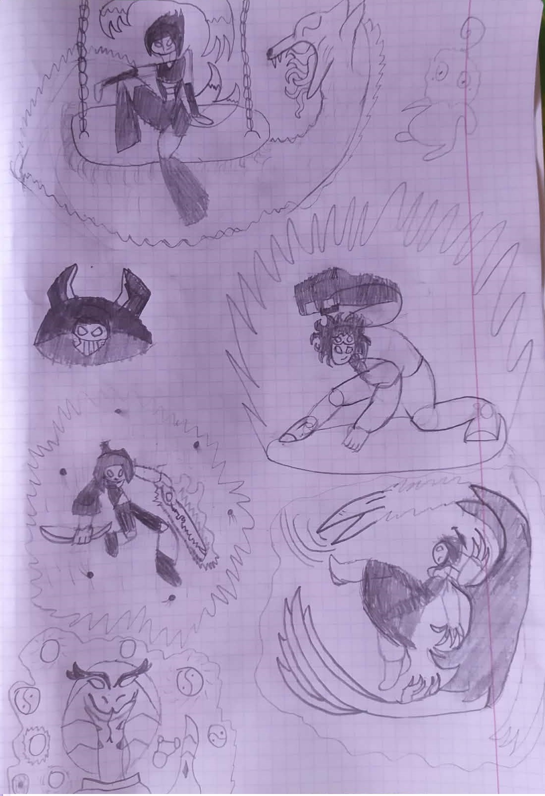

Poster nr1
I just wanted to share my lil doodle of the main allies of the Kyodai.
Had a ton of fun learning how to draw.
(Blog gal is kinda just vibing there, don't pay too much attention)
Featuring:
Fukusari Shirogo- Fox taming chain dancer
Tetsuya Noroi- Blacksmith's Descendant
Phantom- Power hungry hunter from another world
Hayate Kurido- Outcast archer and wielder of the dream sword
Tomoe Pax- Tengu warrior seeking freedom
Ophelia- Priestess of the Snake Archipelago
